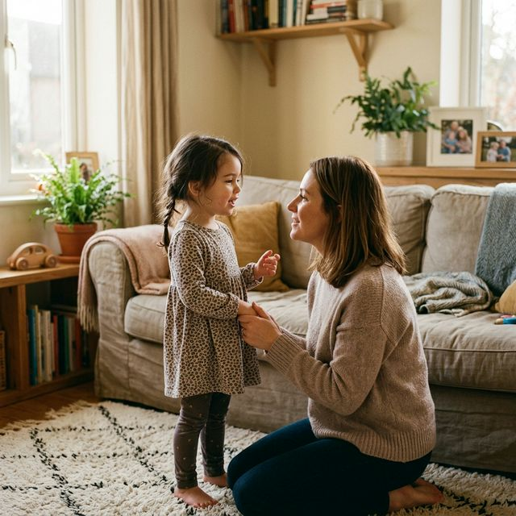
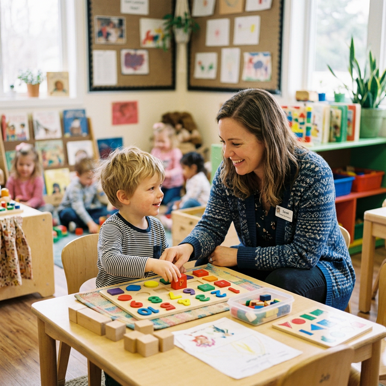

Parenting in the 2020s looks vastly different from previous generations. Today’s parents are navigating uncharted territory, balancing traditional wisdom with emerging research on child development, managing digital devices that didn’t exist in their own childhoods, and questioning educational paradigms that have stood for over a century.

This shift toward what many call “new age parenting” isn’t just a trend—it’s a fundamental reimagining of how we raise emotionally healthy, resilient children in a rapidly changing world.
Understanding Gentle and Respectful Parenting
Unlike authoritarian or permissive parenting styles, gentle parenting emphasizes respect, empathy, and boundary-setting without punishment. Research from the American Psychological Association shows that children raised with authoritative approaches—characterized by warmth combined with clear expectations—demonstrate better emotional regulation and higher self-esteem.
Key Principles of Gentle Parenting:
- Connection before correction: Acknowledging feelings ("I see you're really upset") before setting boundaries.
- Treating children as whole people: Respecting their perspectives and explaining the "why" behind rules.
- Time-ins over Time-outs: Staying with the child while they regulate, teaching them coping skills in real time.
Navigating Technology and Screen Time
Today’s parents are the first generation raising digital natives. Research from the University of Oxford found that the quality of digital engagement matters more than quantity. Interactive educational apps that promote problem-solving show cognitive benefits, while passive video consumption showed none.

Experts recommend co-viewing and co-playing with young children, creating tech-free zones (like bedrooms and mealtimes), and—most importantly—modeling healthy technology use as parents.
Alternative Education Approaches
New age parents are increasingly questioning traditional models, exploring child-led, experiential systems like Montessori and Reggio Emilia. Research shows that young children learn best through play, not formal academic instruction. Play develops executive function skills—planning, impulse control, flexible thinking—which are stronger predictors of school success than early academic drills.
Start Your Journey With TNR
We provide a research-driven environment that respects your child's emotional and digital development.
Call us at +91-7838587500